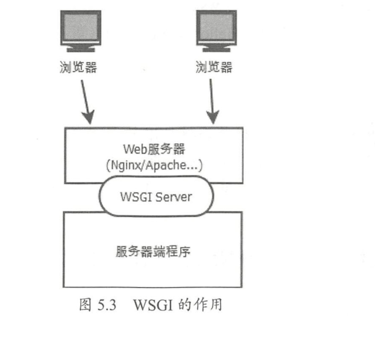

Contents
23.6.2. 开发环境准备¶
在Python中进行网络框架开发的第1步是安装所使用的组件。Python有两种安装组件的方法，分别是easy_install安装和pip安装。
easy_install出现较早，而pip是easy_install的改进版，提供了更好的提示信息。在一般情况下，比较老（2000年之前）的Python库需要用easy_install进行安装，比较新的Python库适合用pip进行安装。在使用Python做大项目开发之前，开发者应该同时安装easy_install和pip。
1.用pip管理其他组件¶
需要使用pip时，可以直接运行pip命令进行软件的安装和卸载。pip比easy_install的命令更丰富。以Tornado框架组件的安装和管理为例演示pip的使用方法如下。
从Pypi网站自动下载并安装组件：
$ pip install tornado
$ pip install tornado= 1.0.8 //可以在安装时指定版本
自动升级组件：
$ pip install –U tornado
升级组件到指定的版本：
$ pip install –U tornado=1.0.9
找到Pypi网站中所有与某关键字有关系的组件：
$ pip search framework //查看所有与"framework"关键字相关的组件
卸载组件：
$ pip uninstall tornado
查看所有选项：
$ pip help
在Windows中，pip的调用方式与Linux略有不同，需要通过python –m pip的方式调用。比如下面是Windows中用pip安装Tornado的命令：
C:\Python2\Scripts\>python –m pip install tornado
2.使用Python虚环境¶
1．虚环境的安装使用
因为pip命令在不同的操作系统中的使用方式一致，所以下面以Linux系统为例演示虚环境的安装及使用。可以通过如下命令一步完成对虚环境的安装：
python2.7中
# 虚环境的安装
$ pip install virtualenv
# 虚环境的使用
$ cd [项目所在目录]
$ virtualenv venv
$ source ./venv/bin/activate
(venv)#python xxxx.py
$ ./venv/bin/activate
(venv)# /＊此处执行的命令在虚环境中运行＊/
$ deactivate
# /＊此处已退出虚环境＊/
python3.3之后版本自带的venv模块
#创建虚拟环境
python -m venv project-env
cd project-env
# 激活虚拟环境
source bin/activite
此时就可以在虚拟环境中使用pip install <package_name>来安装python包了
# 退出虚拟环境
deactivate
3.Web服务器¶
Web服务器是连接用户浏览器与Python服务器端程序的中间节点，在网站建立的过程中起着重要的作用。目前最主流的Web服务器包括Nginx、Apache、lighthttpd、IIS等。
Python服务器端程序在Linux平台下使用最广泛的是Nginx。本节学习Python程序与Web服务器连接的WSGI接口、Nginx的安装和配置方法，以及搭建SSL网站的技术。
3.1 实战演练1:WSGI接口¶
WSGI是将Python服务器端程序连接到Web服务器的通用协议。由于WSGI的通用性，出现了独立的WSGI程序，
例如uWSGI和Apache的mod_wsgi。
WSGI的全称为Web Server Gateway Interface，也可称作Python Web Server Gateway Interface，开始于2003年，为Python语言定义Web服务器和服务器端程序的通用接口规范。
因为WSGI在Python中的成功，所以其他语言诸如Perl和Ruby也定义了类似WSGI作用的接口规范。WSGI的作用如图5.9所示。
从图5.9中可见WSGI的接口分为两个：一个是与Web服务器的接口，另一个是与服务器端程序的接口。
WSGI Server与Web服务器的接口包括uwsgi、fast cgi等，服务器端程序的开发者无须学习这部分的详细内容。
服务器端的开发者需要关注的是WSGI与服务器程序的接口。
WSGI
的服务器程序的接口非常简单，以下是一个服务器端程序的例子，将该文件保存为webapp.py：
def application(environ, start_response):
start_response('200 OK', [('Content-Type', 'text/html')])
return (b'<b>Hello, world!</b>', )
该代码只定义了一个函数app，所有来自Web服务器的HTTP请求都会由WSGI服务转换为对该函数的调用。该示例的app函数中没有复杂的处理，只是通过start_response返回了状态码，并通过return返回了一个固定的HTTP消息体。与该服务器端程序相对应的是下面的WSGI Server程序：
wsgi_server.py
#引入Python的WSGI包
from wsgiref.simple_server import make_server
#引入服务器端程序的代码
from webapp import application
#实例化一个监听8080端口的服务器
server = make_server('', 8080, application)
# 开始监听HTTP请求：
server.serve_forever()
将该WSGI Server的程序保存为wsgi_server.py，通过下面的命令即可启动一个Web服务器，该服务器对所有的请求都返回Hello World页面：
$ python wsgi_server.py
注意： 虽然WSGI的设计目标是连接标准的Web服务器（Nginx、Apache等）与服务器端程序，但WSGI Server本身也可以作为Web服务器运行。由于性能方面的原因，该服务器一般只做测试使用，不能用于正式运行。
3.2 实战演练2:Linux+Nginx+uWSGI配置¶
Nginx是由俄罗斯工程师开发的一个高性能HTT和反向代理服务器，其第1个公开版本0.1.0于2004年以开源形式发布。自发布后，它以运行稳定、配置简单、资源消耗低而闻名。许多知名网站（百度、新浪、腾讯等）均采用Nginx作为Web服务器。
因为Nginx是Python在Linux环境下的首选Web服务器之一，所以本节以Ubuntu Linux为例演示Nginx的安装及配置方法。
1.安装Nginx¶
在Ubuntu Linux中可以通过如下命令安装Nginx：
$ sudo apt-get install nginx
安装程序把Nginx以服务的形式安装在系统中，相关的程序及文件路径如下。
程序文件：放在/usr/sbin/nginx目录中。
全局配置文件：/etc/nginx/nginx.conf。
访问日志文件：/var/log/nginx/access.log。
错误日志文件：/var/log/nginx/error.log。
站点配置文件：/etc/nginx/sites-enabled/default。
安装好后，可以通过如下命令启动Nginx服务器：
$ sudo service nginx start
停止Nginx服务器：
$ sudo service nginx stop
查看Nginx服务的状态：
$ sudo service nginx status
重启Nginx服务器：
$ sudo service nginx restart
2.Nginx配置文件¶
Nginx安装后以默认方式启动，在开发调试的过程中可能需要调整Nginx的运行参数，
这些运行参数通过全局配置文件（nginx.conf）和站点配置文件(sites-enabled/*)进行设置。
对全局配置文件（/etc/nginx/nginx.conf）中的关键可设置参数解析如下：
user www-data; ## 定义运行Nginx的用户
worker_processes 4; ## Nginx进程数，应设置与系统CPU数量相等的数值
worker_rlimit_nofile 65535; ## 每个Nginx进程可以打开的最大文件数
events {
worker_connections 768; ##每个Nginx进程允许的最大客户端连接数
#在Nginx接到一个新连接通知后调用accept()来接受尽量多的连接
multi_accept off;
}
http {
##
# Basic Settings
##
sendfile on; ##是否允许文件上传
client_header_buffer_size 32k; ##上传文件大小限制
tcp_nopush on; ##防止网络阻塞
tcp_nodelay on; ##防止网络阻塞
keepalive_timeout 65; ##允许的客户端长连接最大秒数
##Nginx散列表大小。本值越大，占用的内存空间越大，但路由速度越快
types_hash_max_size 2048;
access_log /var/log/nginx/access.log; ##访问日志文件路径名
error_log /var/log/nginx/error.log; ##错误日志文件路径名
## 如下两条用include命令加载站点配置文件
include /etc/nginx/conf.d/＊.conf;
include /etc/nginx/sites-enabled/＊;
}
在每个Nginx服务器中可以运行多个Web站点，每个站点的配置通过站点配置文件设置。
每个站点应该以一个单独的配置文件存放在/etc/nginx/sites-enabled 目录中，默认站点的配置文件名为/etc/nginx/sites-enabled/default，对其中关键内容的解析如下：
server {
##配置站点监听的端口
listen 80;
root /usr/share/nginx/html; ##配置HTTP根页面目录
index index.html index.htm; ##配置HTTP根目录中的默认页面
#站点监听的IP地址，默认的localhost只可用于本机访问，一般需要将其更改为真实IP
server_name localhost;
##location用于配置URL的转发接口
location /user/ {
##此处配置http://server_name/user/的转发地址
proxy_pass http://127.0.0.1:8080;
}
##错误页面配置，如下配置定义HTTP 404错误的显示页面为/404.html
error_page 404 /404.html;
}
3.安装uWSGI及配置¶
uWSGI是WSGI在Linux中的一种实现，这样开发者就无须自己编写WSGI Server了。
使用pip命令可以直接安装uWSGI：
$ pip install uwsgi
安装完成后即可运行uwsgi命令启动WSGI服务器，uwsgi命令通过启动参数的方式配置可选的运行方式。比如，如下命令可以运行uWSGI，用于加载之前编写的服务器端程序webapp.py：
$ uwsgi --http:9090 --wsgi-file webapp.py
＊＊＊ Starting uWSGI 2.0.12 (64bit) on [Wed Feb 17 15:27:21 2016] ＊＊＊
compiled with version: 4.8.2 on 17 February 2016 15:21:40
os: Linux-3.13.0-32-generic #57-Ubuntu SMP Tue Jul 15 03:51:08 UTC 2014
nodename: iZ28e3m2w7rZ
machine: x86_64
.....
启动时用–http参数指定了监听端口，用–wsgi-file指定了服务器端的程序名。如上所示，uWSGI在启动的过程中会输出系统的一些环境信息：服务器名、进程数限制、服务器硬件配置、最大文件句柄数等。
除了在uWSGI启动命令行中提供配置参数，uWSGI还允许通过一个配置文件设置这些配置参数，比如可以编写如下配置文件，保存在文件名uwsgi.ini中：
[uwsgi]
socket = 127.0.0.1:3011
wsgi-file = webapp.py
启动uWSGI时直接指定配置文件即可：
$ uwsgi uwsgi.ini
此时用浏览器访问服务器的3011端口。
除了http和wsgi-file参数，uWSGI还有很多其他参数，常用的如下。
socket：以WSGI的Socket方式运行，并指定连接地址和端口。该Socket接口是uWSGI与其他Web服务器（Nginx/Apache）等进行对接的方式。
chdir：指定uWSGI启动后的当前目录。
processes：指定启动服务器端程序的进程数。
threads：指定每个服务器端程序的线程数。即服务器端的总线程数为precesses× threads。
uid：指定运行uWSGI的Linux用户id。
比如，如下配置文件用于用Socket方式启动一个uWSGI服务器，并配置了进程和线程数：
[uwsgi]
socket = 127.0.0.1:3011
wsgi-file = webapp.py
processes = 4
threads = 3
4.集成Nginx与uWSGI¶
直接通过在站点配置文件中为location配置uwsgi_pass，即可将Nginx与uWSGI集成，建立一个基于Nginx+Python的正式站点。针对如下uWSGI接口有：
[uwsgi]
socket = 127.0.0.1:3011
wsgi-file = webapp.py
Nginx的站点配置文件为：
server {
listen 80;
##此处改为服务器的真实IP
server_name 121.12.134.11;
location /{
##此处IP与Port配置必须与uwsgi接口中参数相同
uwsgi_pass http://127.0.0.1:3011;
}
}
技巧：可以为一个uWSGI配置多个Nginx Server和location,这样就轻松实现了以多域名访问同一个Python程序。
3.3 实战演练3:建立安全的HTTPS网站¶
普通HTTP站点的协议与数据以明文方式在网络上传输，而HTTPS（Hypertext Transfer Protocol over Secure Socket Layer）是以安全为目标的HTTP通道，即在HTTP下加入SSL层，通过SSL达到数据加密及身份认证的功能。
目前几乎所有的银行、证券、公共交通的网站均以HTTPS方式搭建。
OpenSSL 是一个强大的免费Socket 层密码库，蕴含了主要的密码算法、常用的密钥和证书封装管理功能及SSL协议。目前大多数网站通过OpenSSL工具包搭建HTTPS站点，其步骤如下。
在服务器中安装OpenSSL工具包。
生成SSL密钥和证书。
将证书配置到Web服务器。
在客户端安装CA证书。
本节演示在Linux Ubuntu下OpenSSL的使用方法，以及Nginx在Linux下的证书配置方式。Windows中OpenSSL的使用方式与Linux中的完全一致，读者可以自行尝试。
1.在服务器中安装OpenSSL工具包¶
通过如下两条命令安装OpenSSL：
$ sudo apt-get install openssl
$ sudo apt-get install libssl-dev
命令运行成功后，OpenSSL命令和配置文件将被安装到Linux系统目录中。
OpenSSL命令:
/usr/bin/openssl。配置文件：
/usr/lib/ssl/*。
2.生成SSL密钥和证书¶
通过如下步骤生成CA证书ca.crt、服务器密钥文件server.key和服务器证书server.crt：
#生成CA 密钥
openssl genrsa -out ca.key 2048
#生成CA证书，days参数以天为单位设置证书的有效期。在本过程中会要求输入证书的所在地、公司名、站点名等
openssl req -x509 -new -nodes -key ca.key -days 365 -out ca.crt
#生成服务器证书RSA的密钥对
openssl genrsa -out server.key 2048
#生成服务器端证书CSR，本过程中会要求输入证书所在地、公司名、站点名等。
openssl req -new -key server.key -out server.csr
#生成服务器端证书 ca.crt
openssl x509 -req -in server.csr -CA ca.crt -CAkey ca.key -CAcreateserial -out server.crt
-days 365
上述命令生成服务器端证书时，必须在Common Nanme （CN） 字段中如实输入站点的访问地址。
即如果站点通过www.mysite.com访问，则必须定义CN=www.mysite.com；如果通过IP地址访问，则需设置CN为具体的IP地址。
3.配置Nginx HTTPS服务器¶
在站点配置文件/etc/nginx/sites-enabled/default中添加如下server段，可以定义一个基于HTTPS的接口，该接口的服务器端程序仍旧为uWSGI接口127.0.0.1:3011。
server {
listen 443; #HTTPS服务端口
server_name 0.0.0.0; #本机上的所有IP地址
ssl on;
ssl_certificate /etc/nginx/ssl/server.crt;
ssl_certificate_key /etc/nginx/ssl/server.key;
location \ {
uwsgi_pass http://127.0.0.1:3011;
}
其中需要注意的是参数ssl_certificate和ssl_certificate_key需要分别指定生成的服务器证书和服务器密钥的全路径文件名。
至此，我们已经可以使用浏览器访问服务器的443端口进行HTTPS加密通信了。